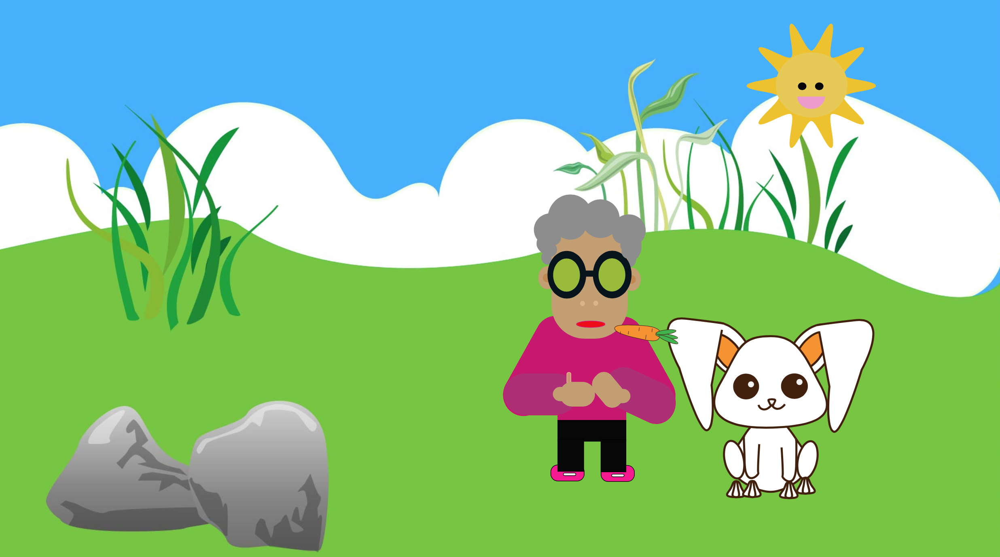

I tema 3, sku vi arbejde alene med opgaven. opgaven lyd på vi sku animeret en fortælling! Strukturmæssigt skal historien følge en bestemt model, men bestemmer helt selv, stil og indhold. Fortællingen opleves i en browser, og skal benytte browserteknologier (HTML, CSS og JavaScript/jQuery) til at implementere den. jegskal selv tegne al grafik, både scenografi og karakterer, og skal selv optage og redigere lydsiden i fortællingen!
Animation linkJeg started emed at finde på en ide, til min historie. med enflowchart og moodboard og. Min historie var meget sinple. En gammel dame, der skal give en kaninen gulerøder.
